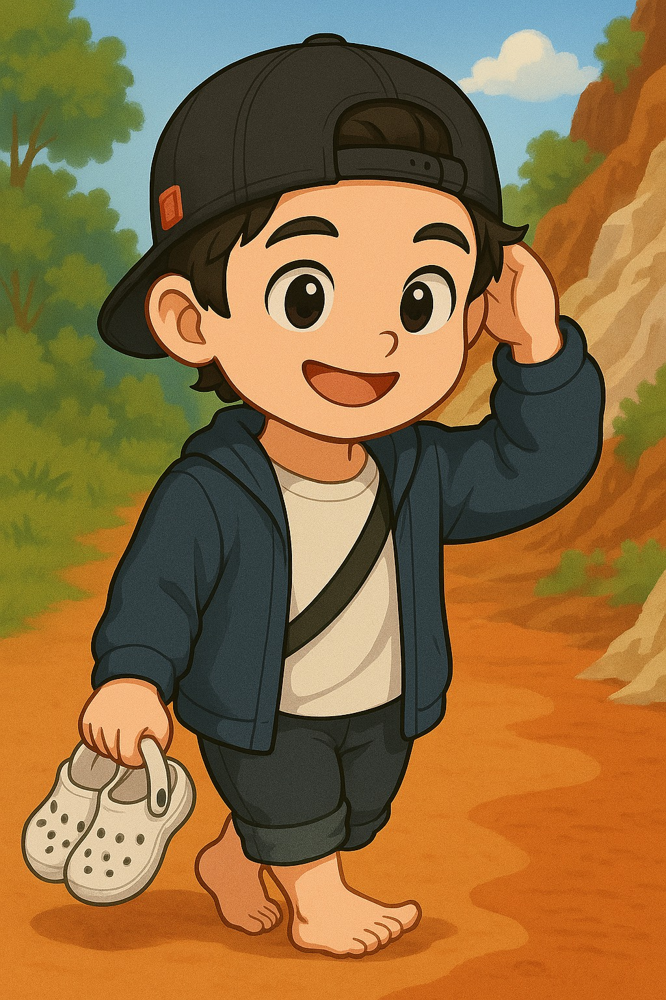

個人數位履歷
學歷：
大學畢業於銘傳財務金融系，目前就讀國立海洋大學水產養殖系
大學畢業於銘傳財務金融系，目前就讀國立海洋大學水產養殖系
工作經歷：
🧾 個人工作經歷摘要（約10~11年）
✅ 爭鮮股份有限公司 — 專案主任（2023/5 – 2024/10）
✅ 三商家購 — 採購課長（2022/11 – 2023/4）
✅ 萊爾富 — 採購專員（2017/6 – 2022/11）
✅ OK超商 — 採購專員（2012/8 – 2012/12）
✅ 長古公司 — 業務助理（2010/8 – 2017/5）
🧾 個人工作經歷摘要（約10~11年）
✅ 爭鮮股份有限公司 — 專案主任（2023/5 – 2024/10）
✅ 三商家購 — 採購課長（2022/11 – 2023/4）
✅ 萊爾富 — 採購專員（2017/6 – 2022/11）
✅ OK超商 — 採購專員（2012/8 – 2012/12）
✅ 長古公司 — 業務助理（2010/8 – 2017/5）
研究方向：
主要研究水產養殖經濟
主要研究水產養殖經濟
休閒活動：
游泳、中台世界博物館義工
游泳、中台世界博物館義工